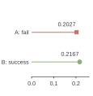
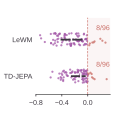
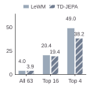
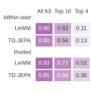
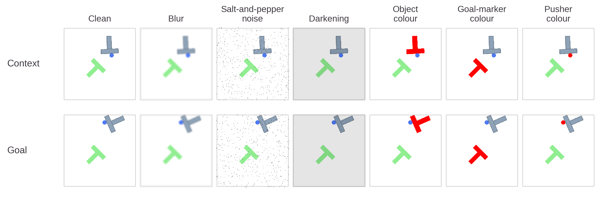
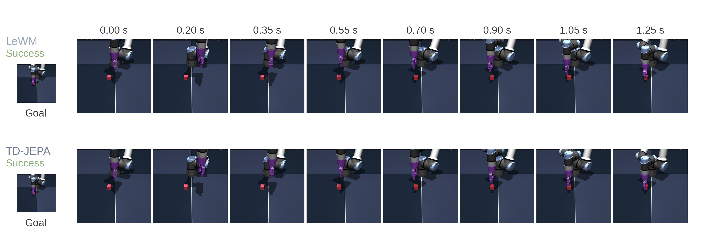

PushT
TD-JEPA / D-JEPA25 controls, including the complete action sequence and terminal state.
View the timeline ↗Aligning predicted futures with better actions.
1The Hong Kong University of Science and Technology (Guangzhou)
2Boston University 3Shanghai Jiao Tong University
*Corresponding author: ningxinsu@hkust-gz.edu.cn
D-JEPA learns decision-relevant relations across pretrained predictive models and realizes them in future representations.
Matched executions across manipulation and driving, with Cube included as saturated-task coverage. Select a task or scene to watch.
25 controls, including the complete action sequence and terminal state.
View the timeline ↗25 controls. The target specifies the final joint configuration.
View the timeline ↗Five actions with settling steps, showing the evolving particle distribution.
View the timeline ↗Matched initial state, complete recorded sequences at 2× playback. The aligned execution stops on success; its final frame is held while the native sequence continues.
View the timeline ↗Recorded camera context and simulated candidate trajectories, synchronized over four seconds.
View the timeline ↗An unseen I-shaped object, with the same goal and action candidates.
View the timeline ↗Object-colour change after task-local fitting, evaluated on a fresh start.
View the timeline ↗The appendix turning case: D-JEPA satisfies the comfort criterion; both candidates satisfy the collision and TTC criteria.
View the timeline ↗The appendix progress case: D-JEPA travels farther through the same traffic scene. Logged camera context accompanies paired simulated trajectories.
View the timeline ↗Both predictive baselines succeed. This saturated-task example documents coverage; it is not a D-JEPA comparison.
View the timeline ↗The model prefers one future. Execution favors another. A candidate closer to the goal in predicted latent distance can fail, while a slightly farther alternative succeeds. Across matched PushT decisions, ranking fidelity also drops sharply within the shortlist from which actions are selected. D-JEPA learns the relations that distinguish these consequential alternatives.
Learn the decision-relevant relations between candidate futures, then use those relations to align action selection.
The decision boundary is a learning target—not just a property inherited from pretraining.




Predictive geometry → candidate ordering → physical outcome
Author-drawn illustration forthcomingPredictive models · Relational alignment · Future representation
Reserved for the final hand-drawn overviewLearn bounded, set-wise corrections from future–goal descriptors and ordinal structure. Restricted predictor adaptation offers a complementary source of decision evidence.
Explore the modules ↗Combine relational evidence from complementary predictors in one alignment framework, extending beyond a single predictive distance.
Read the protocols ↗Encode a learned decision ordering in JEPA-compatible goal-distance geometry, and learn bounded, same-action updates across future time steps.
Explore checkpoints ↗PushT exact realization preserves earlier futures and encodes terminal ordering while retaining its embedded predictive and relational computation. Reacher learns same-action five-step future updates; its reported physical decisions use the relational selector. These experiments establish complementary mechanisms and do not imply a newly evaluated combined checkpoint or single-backbone distillation.
Matched candidate sets isolate the quality of action selection across simulation, foundation models, autonomous driving and physical manipulation.
+4.30 pp over LeWM
Independent decision-boundary evaluation
+15.04 pp over native VLA selection
Four language-conditioned tasks
+17.0 pp over V-JEPA 2-AC
PushT and two-cube stacking
+37.98 over Drive-JEPA ranking
Seven difficult scenes
| Task | Evaluation | Matched reference | D-JEPA | Gain |
|---|---|---|---|---|
| PushT | Success · 256 starts | LeWM · 83.59% | 87.89% | +4.30 pp |
| DMC-Reacher | Success · 128 starts | LeWM · 86.72% | 93.75% | +7.03 pp |
| Granular | Strict attainment · 64 starts | DINO-WM · 7.81% | 18.75% | +10.94 pp |
| Each task retains its own evaluation population and success criterion. Granular reports attainment at the stricter Chamfer-distance threshold (0.12). | ||||
| Setting | Metric / scale | Matched reference | D-JEPA | Gain |
|---|---|---|---|---|
| Held-out PushObj shapes | Success · 300 starts | Calibrated fusion · 44.67% | 53.67% | +9.00 pp |
| Appearance changes | Mean success · 7 conditions | Calibrated fusion · 62.86% | 73.14% | +10.29 pp |
| RoboTwin | Success rate · 4 tasks | Native VLA · 61.72% | 76.76% | +15.04 pp |
| Physical PiPER | Mean success rate · 2 tasks | V-JEPA 2-AC · 64.0% | 81.0% | +17.0 pp |
| Autonomous driving | Mean PDMS · 7 scenes | Drive-JEPA · 57.36 | 95.34 | +37.98 |
| Appearance changes are evaluated on 50 new base starts per condition; RoboTwin uses 128 starts per task and PiPER 50 paired trials per task. PiPER success is averaged equally across its two tasks. Driving reports mean PDMS over seven difficult scenes. | ||||
Each row retains its own task metric and evaluation population. Full counts, paired outcomes and task-specific costs remain available in the paper and the decision-supervision dataset.


Click any panel for the full-size vector figure. TD: TD-JEPA; Ours / D: D-JEPA; N: native selection; F: calibrated fusion. Success panels show 95% intervals; paired panels retain gains and losses. Multi-geometry results use 128 mechanism-evaluation starts; PushT deployment and decision ablations use 256 confirmation starts. Budget bands span 16 subset seeds; temporal transport is the Reacher five-step diagnostic.
| Configuration | Decision readout | Success | Median inference |
|---|---|---|---|
| Relational alignment | Relational score | 87.11% | 35.03 ms |
| Calibrated composition | Gated composition | 87.89% | 52.16 ms |
| Ordinal realization | Native goal distance | 87.11% | 34.02 ms |
| Independent PushT evaluation, 256 starts. Ordinal realization recovers 100% of relational action choices and candidate ranks through native goal distance. Timing includes the predictive and relational computation, measured per start. | |||




Task-specific checkpoints, decision supervision and a compact evaluation package.
Task interfaces: robotic manipulation · autonomous driving · physical-robot workflows. Each guide describes inputs, training and evaluation commands, and environment dependencies.
Full reproduction guide ↗pip install -e '.[download]'
python scripts/download_artifacts.py --profile pusht-relational --dataset
python -m zipfile -e data/D-JEPA-supervision-v1.zip data
bash scripts/reproduce.sh{kind=link}
{kind=link}
{kind=link}
{kind=link}
{kind=link}
{kind=link}
{kind=link}
{kind=link}
{kind=link}
{kind=link}
{kind=link}
{kind=link}
{kind=link}